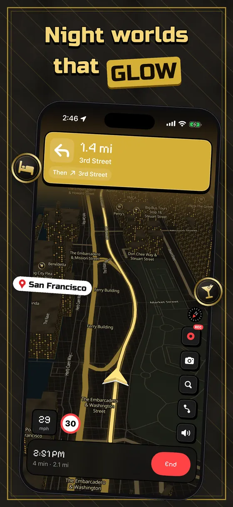
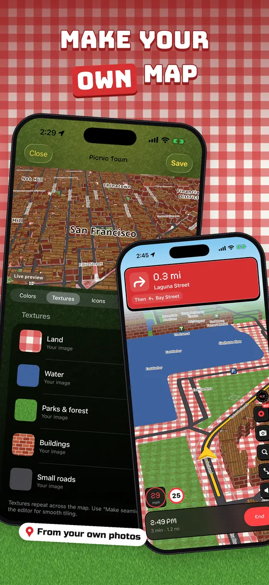
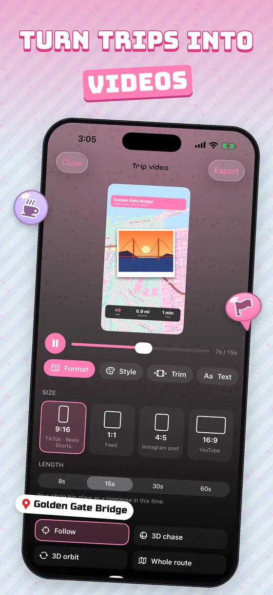

Centro de ayuda de ROAMO 1.0
¿Cómo podemos ayudarte?
Guías paso a paso para ROAMO en iPhone, iPad, CarPlay y Apple Watch, y respuestas sobre compras y privacidad.
Esta traducción se ofrece por comodidad. Si difiere de la versión en inglés, prevalece la versión en inglés.
Empieza en un minuto
ROAMO es una app de navegación giro a giro de verdad. No hay que crear ninguna cuenta: ábrela y en marcha.
- Permite la ubicación para que ROAMO muestre dónde estás y te guíe.
- Busca o habla: escribe una dirección o un lugar, toca el micrófono o elige una categoría cercana como gasolina, carga o café.
- Previsualiza la ruta en coche, bici o a pie, y compara la más rápida y la más corta.
- Toca Ir. Tarjetas de giro grandes, tu velocidad junto al límite y la guía por voz te llevan.
22 mundos de mapa, 2 de ellos gratis
Toca Cambiar mundo en el mapa y todo se redibuja: suelo, agua, calles, etiquetas y el color de tu ruta. Block World y Doodle Notebook son gratis para siempre; ROAMO Pro desbloquea los 22.
- Elige un mundo de día y uno de noche: los mundos oscuros como Neon Night brillan tras la puesta de sol.
- Cambia de mundo en mitad de un viaje, en el iPhone o en CarPlay.
- Cada mundo puede hablar con su propio copiloto. Elige la voz en Ajustes › Voz del copiloto: Clásico es gratis, las voces de personaje vienen con Pro.


ROAMO en CarPlay
Tu mapa estilo videojuego, la búsqueda y la guía giro a giro en la pantalla del coche, sincronizados con tu iPhone.
- Conecta el iPhone al coche con cable o de forma inalámbrica.
- Toca ROAMO en la pantalla de inicio de CarPlay.
- Busca con el teclado del coche o elige un lugar reciente o favorito y toca Ir.
- Toca el botón del globo para cambiar de mundo mientras conduces, y Fin para terminar.
¿No ves ROAMO en el coche? En el iPhone abre Ajustes › General › CarPlay, elige tu coche, toca Personalizar y añade ROAMO.

En la pantalla bloqueada y el Apple Watch
Mientras navegas, el siguiente giro te acompaña fuera de la app.
- Actividad en directo: el siguiente giro y tu hora de llegada en la pantalla bloqueada y en la Dynamic Island. Actívala en Ajustes del iPhone › ROAMO › Actividades en directo.
- Widgets: añade ROAMO a la pantalla de inicio para ir a casa o al trabajo con un toque.
- Apple Watch: tarjetas de giro, el mapa, Casa, Trabajo y tus favoritos en la muñeca. Instálala desde la app Watch del iPhone, en Apps disponibles.
- Siri: di “Ir a casa con ROAMO” o “Buscar café cerca con ROAMO”.


Hazlo tuyo
- World Studio (Pro): parte de cualquiera de los 22 mundos y cambia los colores, usa tus fotos como texturas y dibuja tus propios iconos de lugares. Toca Cambiar mundo y luego Crea tu propio mundo.
- Puntero: elige un puntero de videojuego para tu coche o crea el tuyo a partir de una foto.
- Icono de la app: seis iconos alternativos se desbloquean al conducir, a los 10, 50, 100, 250, 500 y 1.000 km. Consulta Ajustes › Icono de la app.
- Comparte un mundo: envía el archivo .roamoworld por AirDrop, Mensajes o Archivos. Nunca pasa por un servidor.



Convierte tus viajes en vídeos
Cada viaje que navegas puede convertirse en una repetición de tu ruta en tu mundo, lista para TikTok, Reels o Shorts.
- Los viajes se graban mientras navegas y se quedan en tu iPhone. Puedes desactivarlo en Ajustes › Grabar viajes.
- Al llegar, toca Crear vídeo del viaje, o abre más tarde Ajustes › Viajes y vídeos.
- Elige un formato (9:16, 1:1, 4:5 o 16:9), una duración, un filtro, títulos y música.
- Guárdalo en Fotos o compártelo. Con Pro, los vídeos no llevan marca de agua y pueden usar tu propia música.
También puedes añadir un clip corto de la cámara frontal, sin sonido. Solo se graba si lo activas y se queda en tu iPhone.

Preguntas frecuentes
¿Cómo restauro mi compra?
¿Cómo cancelo mi suscripción?
¿Qué puedo hacer gratis?
¿Por qué veo «Se alcanzó el límite diario del servicio de mapas»?
¿Cómo cambio el idioma?
¿Cómo cambio entre millas y kilómetros o silencio la voz?
El punto azul no se mueve o aparece en un lugar equivocado.
¿En qué dispositivos funciona ROAMO?
¿Se suben mis viajes y vídeos a algún sitio?
Enlaces útiles
Contacto
Escribe a info@deeplyai.app. Incluye el modelo de tu iPhone, la versión de iOS y una breve descripción del problema. Solemos responder en dos días laborables.
Las capturas muestran la versión en inglés de la app.